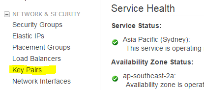
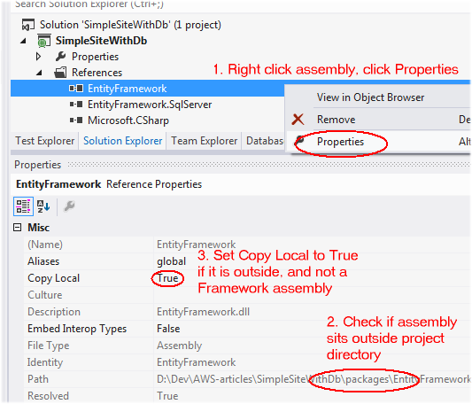
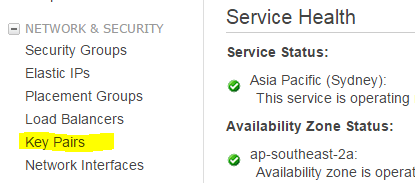

When it comes to hosting a web site, you have a couple of options. You could rent space on a web server from a hosting company. You could run your own servers. Or if you need to be able to quickly spin up/down servers in response to changing traffic, you could use a cloud provider.
In the .Net world, the best known cloud provider is probably Windows Azure. However, it is far from the only one.
Amazon Web Services (AWS) is a cloud provider, similar to Azure. Launched in 2006, it has a 4 year head start on Azure. As of late 2014, it had 1.4 Million servers in data centres in the US, Europe, Asia and Australia. So it's very big.
AWS offers over 40 services, from virtual machines and load balancers, to very large scale data warehouses. It's well documented and .Net receives first class support, making it a worthy alternative to Windows Azure.
In this series of articles, we'll take a web site with a SQL Server database, and host it on AWS.
To make it interesting, here are some goals:
Here is what it will look like:

We'll do the blue bit (the web servers and the load balancer) in this article. The DNS name servers (for your own domain name) and the database will be covered in subsequent articles.
Seeing that this article shows how to deploy a web site to AWS, if you want to follow along you'll need some web site to deploy.
If you have a web site project lying around, you can use that. MVC and WebForms are both fine.
Otherwise feel free to get my trial site SimpleSite from Github. This site does not use a database.
Make sure that all references pointing to outside your web application have Copy Local set to True. This way, they'll wind up in the application source bundle that you'll create in a moment to deploy your site to AWS. Otherwise, your site will simply crash when it starts up due to missing assemblies.
This goes in particular for NuGet packages, because these normally sit in a packages directory that sits outside your project directory. Framework dlls should be fine, because the AWS EC2 web server will have the .Net framework installed.

If you do not have an AWS account yet, create a free account.
Note that although Amazon calls this a "free" account, you may still incur some charges - if you go over usage limits, or if you use services that are not included in the free tier. For example, in this article we'll create a load balancer, which costs some tiny amount to run.
Here are the pages with pricing info for the services that we'll use in this article, as of March 2015. You'll probably find that just playing around with these services won't cost you more than a coffee:
| Service | Used for |
|---|---|
| EC2 t2.micro instances | Virtual machines running web servers |
| Elastic Load Balancing | Load balancer |
| Auto Scaling | Spinning up/down web servers in response to traffic load |
| Elastic Beanstalk | Deployment configuration |
AWS has data centers spread all over the world. They are divided into regions, such as "US East (N. Virginia)" and "EU (Ireland)".
After you've logged into the AWS Console, select the region that you're in or close to (top right hand corner of the page).
Note that automatic failover for SQL Server databases is currently only available in the US East (N. Virginia), US West (Oregon), and EU (Ireland) AWS regions. If automatic failover is important to you, than set one of these regions.

Once you have your EC2 web servers created, you will be able to log into them - using RDP, as with any other Windows Server machine. However, to keep your login password secure, AWS uses a key pair - the public key is used to encrypt the password, the private key is used to decrypt it. Only you have the private key.
The deployment system that we're going to set up will log into your web servers to deploy your website, so it will need your key pair. That means that now is a good time to create your key pair:

Note that a key pair is only valid in the region where it was created. So when you create EC2 web servers in another region, you'll need to create another key pair for that region to be able to log into the servers in that region. It's easiest to stick with one region.
In order to deploy your web application to AWS, you have to package it into an application source bundle.
I have found that Amazon's instructions didn't give me an application source bundle that would actually work on AWS.
However, you can simply run msbuild to create a valid application source bundle for you, using these command line instructions:
cd /D "<directory with your .csproj file>" msbuild <your project>.csproj /t:Package /p:Configuration=Release /p:PackageLocation=. /p:AutoParameterizationWebConfigConnectionStrings=False
This produces a .zip file in the current directory. That .zip file is your application source bundle.
A very easy way to do this is through the Elastic Beanstalk service. This lets you create a specification of the environment you want - what size web servers, what sort of database, etc. You also give it the code making up your web application. Once that's done, it creates all the web servers, etc. you specified and deploys your application.
A specification is called a "Elastic Beanstalk application". You can have multiple Elastic Beanstalk applications - which may be useful for example if you have multiple web sites.
When it comes time to deploy a new version of your application, you select the Elastic Beanstalk and tell it to deploy your new version.
Because it stores each version, you can quickly get a list of versions that have gone before, and revert to a previous version if your new version doesn't work out. This puts it in the same space as for example Octopus Deploy.

Here we're deploying a web site, so click Create web server.
Later on, you'll see how to deploy new versions of your application to an existing environment. The Deployment Limits section shows how Elastic Beanstalk avoids downtime during a deployment by deploying to a few web servers at a time, while the others keep serving requests. Click Next.
Each environment (test site, live site, etc.) obviously has its own URL. Here you get to specify a sub domain of the elasticbeanstalk.com domain. Later on, you'll see how to associate your own domain with your site.
| Field | Description |
|---|---|
| Instance type | The default here is t1.micro, but this type is of a previous generation. Note that t2.micro is included in the AWS Free Tier, so you may want to select that instead. |
| EC2 key pair | Select the key pair that you created earlier on. |
| Application health check URL |
The load balancer keeps track of the health of your web servers, so it can replace web servers
that are no longer healthy. It does this by regularly sending requests to each web server.
If it gets a normal HTTP 200 response, it assumes the web server is healthy.
Here you specify the relative URL that the load balancer should request. Make this a page that doesn't take a lot of resources to generate, but that still gives a fair indication of whether the server is functioning well. If you're using my trial site, you could use the home page. In that case, you'd enter the URL "/" (without the quotes). |
| Cross zone load balancing | Cross zone load balancing is a feature that allows the load balancer to correctly balance the load across servers in multiple data centers, giving you higher availability for your web site. Leave this checked. |
| Root volume size | Leave the default, or make 30 GiB or higher - in spite of the 8 GiB minimum stated by Amazon. Otherwise you will get error messages later on when you try to actually create the environment. |
This will take you to the Elastic Beanstalk dashboard for your environment, where you can see it spinning up.
Once it is green, click the Url of your new environment (right next to the header with your environment name) to see your web site appear. If it goes red, there is probably something wrong with your deployed site. It is often useful then to RDP into the web server and open http://localsite with Internet Explorer.
Now to RDP into your server: click your web server | Connect button.
Click the Instances tab to see all web servers behind the load balancer. Right now, that would be your one web server.
To deploy a new version of your web site, first create a new application source bundle. Then click Upload and Deploy on the Elastic Beanstalk dashboard.
To get basic stats about your web site, on the Elastic Beanstalk dashboard, click Monitoring.
You can change the metrics on the dashboard via the Edit buttons.
Once you're done with the servers, you will want to take them down to save money.
Note that one way of doing this would be by terminating the environment from the Actions drop down on the Elastic Beanstalk dashboard. However, this deletes your entire environment, so next time you want to spin up the servers, you have to go through the wizard again to specify the environment.
The only way to take down your web servers is one by one: Services | EC2 | Instances | click your server | Actions | Instance State | Stop.
To take down your load balancer: Load Balancers (left hand menu) | click load balancer | Actions | Delete.
Once all this is done, your Elastic Beanstalk application shows red.
To get your application operational again: Services | Elastic Beanstalk | click the environment | Actions | Rebuild Environment
In subsequent parts, you'll see how to add a SQL Server database with automatic fail over, so if your database server goes missing, your application recovers automatically. You'll also see how to point your own domain to your AWS hosted web site.